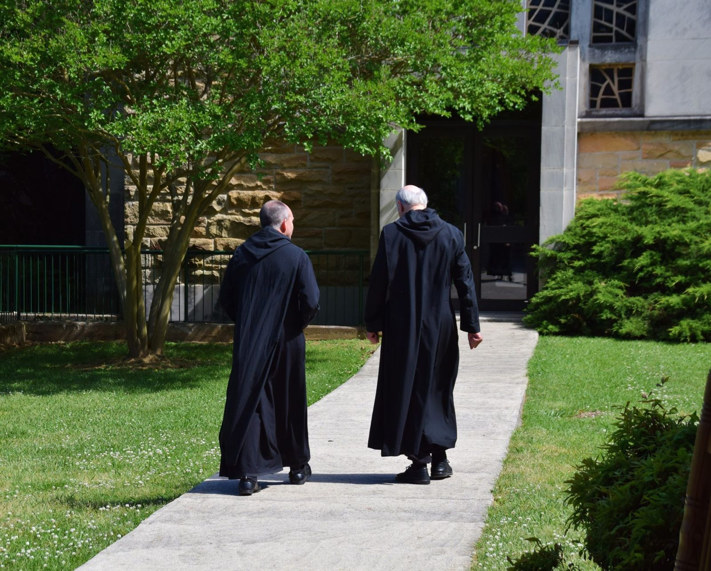
The Monastery
The monks of St. Bernard Abbey
The monastery
One purpose: to seek God together
A monastery is a family of men who share everything (prayer, work, meals, house and property) for one reason: union with God. An abbey is a monastery led by an abbot.
The monks of St. Bernard are Benedictines. They live by the Rule St. Benedict wrote around the year 530, a “little rule for beginners” of prayer and work, silence and conversation, strictness and mercy. They vow stability, which binds them for life to this one community on this one hill, and they gather in the Abbey Church at least five times a day. In between they teach in the school, care for guests and for the Grotto, bake, farm, keep more than 800 acres of woods and fields, and serve parishes across the Diocese of Birmingham.
In recent years more young men have come to St. Bernard than to most American Benedictine monasteries. In June 2025 the monks dedicated their renovated monastery, built in 1963, with a new novitiate to welcome them.
Get to know the monks
Twenty-three brothers
Monks from Alabama and Pennsylvania, Cuba and Colombia; a soldier, a sailor, an airman, a sign-language interpreter, a math teacher who wanted to be a pilot. One Rule, one choir, one table.
Solemnly professed
Monks who have made their solemn vows for life, in the order of the community's roster.
-
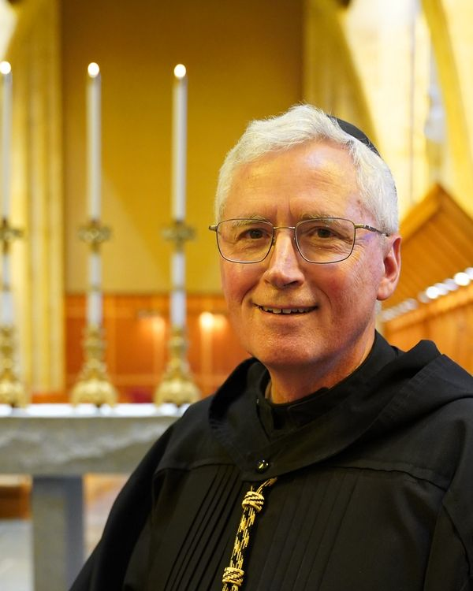
Photo: Anne Stephens Abbot Brendan Seipel
11th Abbot · elected July 2026
He entered in 2002 and made his vows in 2004. Before the community elected him abbot he served as guestmaster, director of the St. Boniface Retreat Center and of the Abbey Farm, subprior and prior.
-
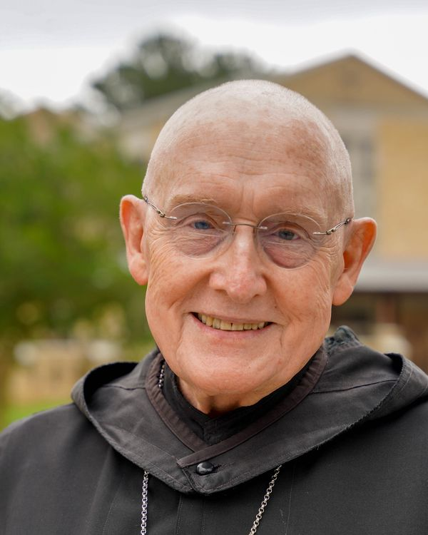
Photo: Anne Stephens Abbot Cletus Meagher
9th Abbot, 1995–2019
A boy at St. Bernard's seminary in 1958, he entered the monastery in 1964 and was ordained in 1971. After twenty-four years as abbot he went back to parish work, and to the school as its chaplain. “Our whole being belongs to God and to the community of brothers among whom we work and pray.”
-
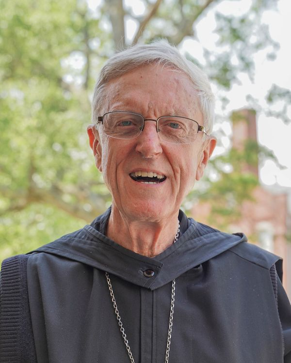
Photo: Anne Stephens Abbot Marcus Voss
10th Abbot, 2019–2025
St. Bernard was in the family: his uncle, Abbot Victor Clark, was a monk here. Choirmaster for twenty years, he prepared a four-volume Book of Hours for the monks' choir, and helped bring St. Bernard Prep back to life in the 1980s.
-
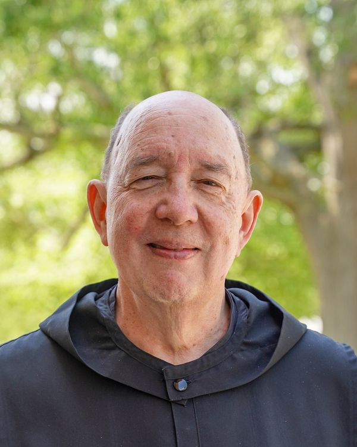
Photo: Anne Stephens Fr. Joel Martin
Subprior · interim headmaster of St. Bernard Prep
He became a Catholic in 1976, applied to the monastery in 1981, “chickened out,” and came at last in 1984. “My motivation was to give myself totally and radically to God; that idea made me happy and frightened at the same time.”
-
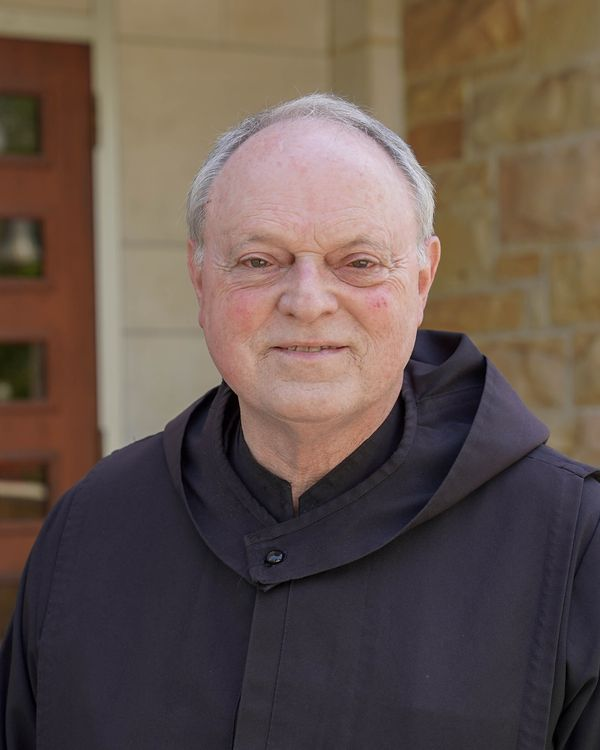
Photo: Anne Stephens Br. Charles Manning
Treasurer (procurator)
He came to St. Bernard College and was “charmed” into the monastery by his math professor, old Fr. John Capesius. He taught biology and physics at the Prep for thirty-four years and has planted a number of the trees on the campus.
-
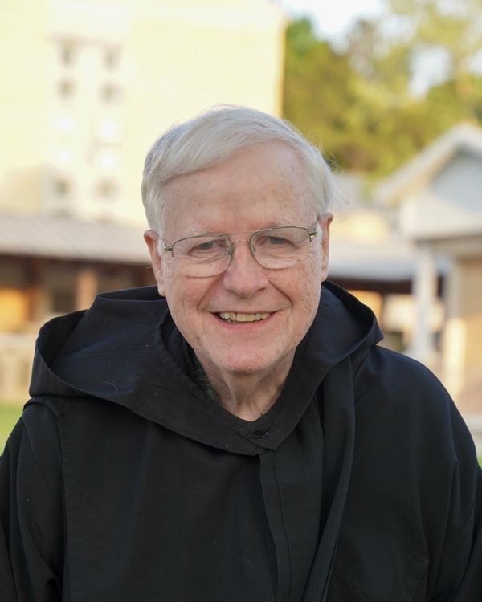
Photo: Anne Stephens Fr. John O'Donnell
Priest · painter
A monk since the 1980s: once manager of the Ave Maria Grotto, chaplain to the county sheriff and the county jail, and for years a priest at Sacred Heart in Cullman. He paints the small ceramic churches sold at the Grotto. “I enjoy the inner discipline of the monastery.”
-
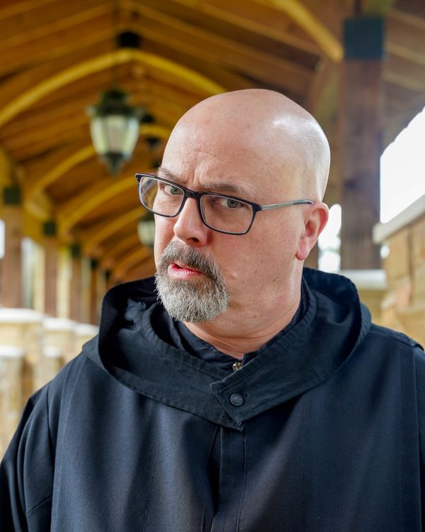
Photo: Anne Stephens Br. Leo Borelli
St. Bernard Scriptorium
A former prior, he has taught Latin and ceramics. He now lives as a hermit of the abbey and works in the St. Bernard Scriptorium.
-
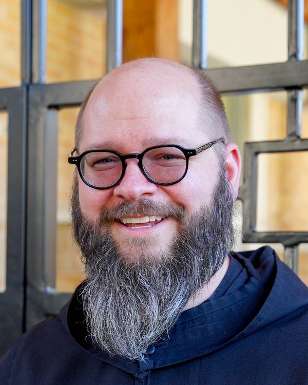
Photo: Anne Stephens Fr. Bede Marcy
Priest
For years the chaplain of St. Bernard Prep, he taught religion and took students to the March for Life. More recently he has headed the dining hall staff.
-
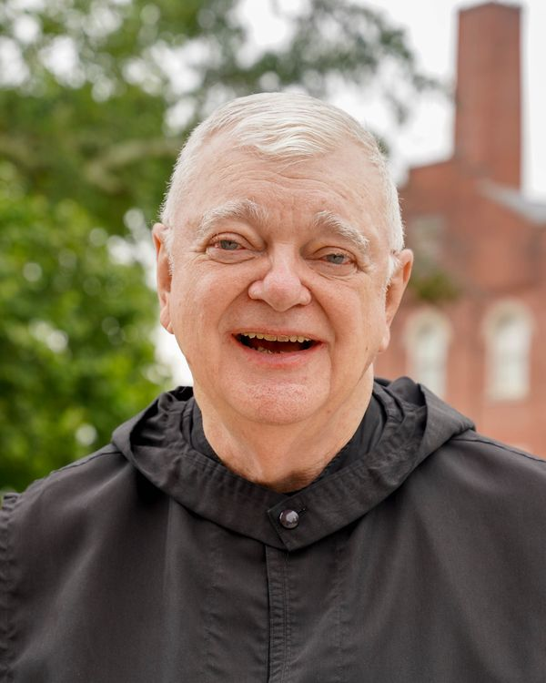
Photo: Anne Stephens Fr. Patrick Egan
Pastor of St. Michael's, St. Florian
Thirty years an Army officer, from Desert Storm to the Pentagon, he retired a colonel in 2001 and entered St. Bernard the same year. As pastor of Sacred Heart in Cullman for sixteen years he restored its windows and replaced the organ lost to fire.
-
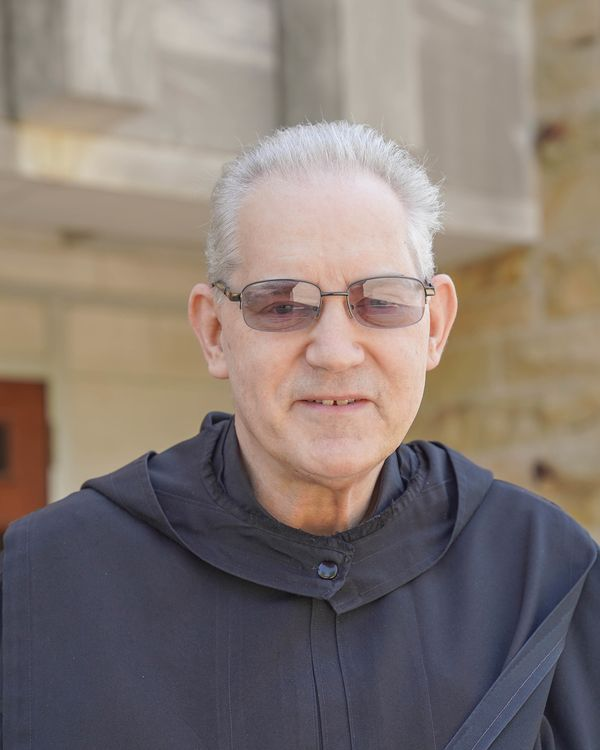
Photo: Anne Stephens Br. Michael Gregersen
A veteran of the United States Air Force, where he served as a sergeant.
-
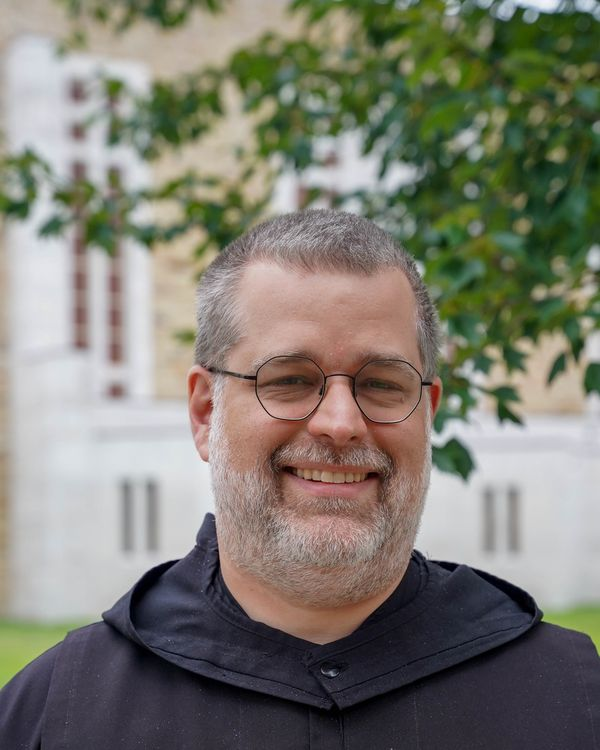
Photo: Anne Stephens Br. Benedict Dyar
Head baker · director of oblates
Drawn to monastic life from the time he became a Catholic in 2004, he came in 2007. He bakes the monks' bread, teaches the young monks, and has written a fantasy novel, The Flame of Telbyrin.
-
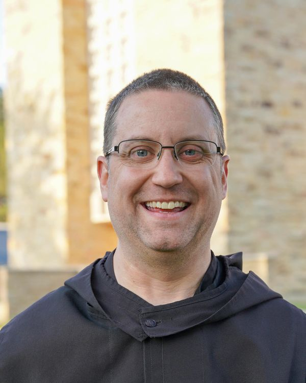
Photo: Anne Stephens Br. Thomas Jones
Librarian
He left a job in 2010 and entered two months later, drawn by the way the monks pray the Office. He keeps the library of the abbey and the school and coaches the Scholars' Bowl team; as a young monk he learned to repair the Grotto's miniatures.
-
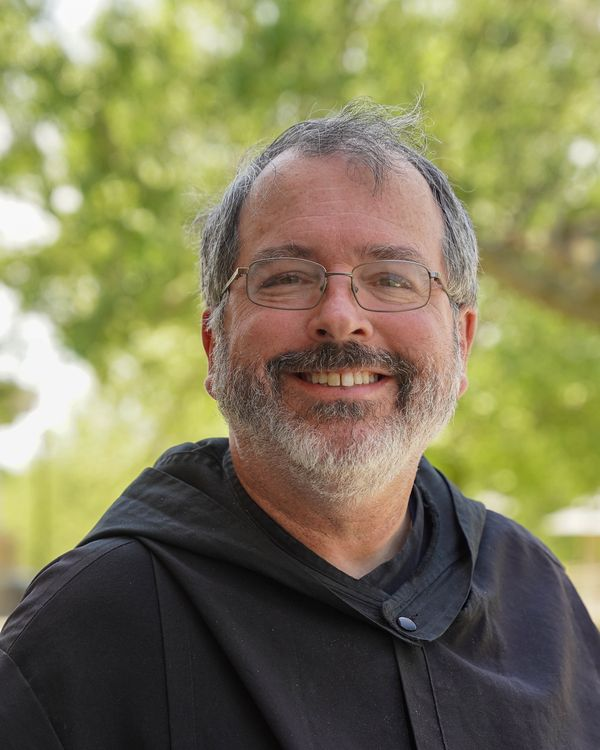
Photo: Anne Stephens Fr. Linus Klucsarits
Pastor of Sacred Heart, Cullman
A sign-language interpreter and college professor before he came, he has been headmaster and prior here. A runner and a New York Mets fan. “The Benedictine vow of stability spoke to my heart.”
-

Photo to come Br. Irenaeus Ceballos
Deacon
He made his vows at St. Bernard in 2014 and was ordained a deacon in 2021.
-
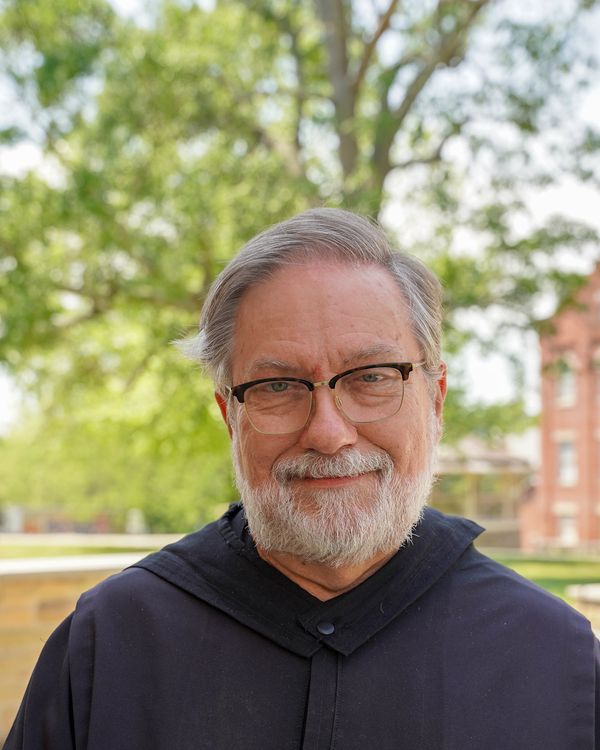
Photo: Anne Stephens Br. Christopher McBride
He made his first vows at St. Bernard in August 2014.
-
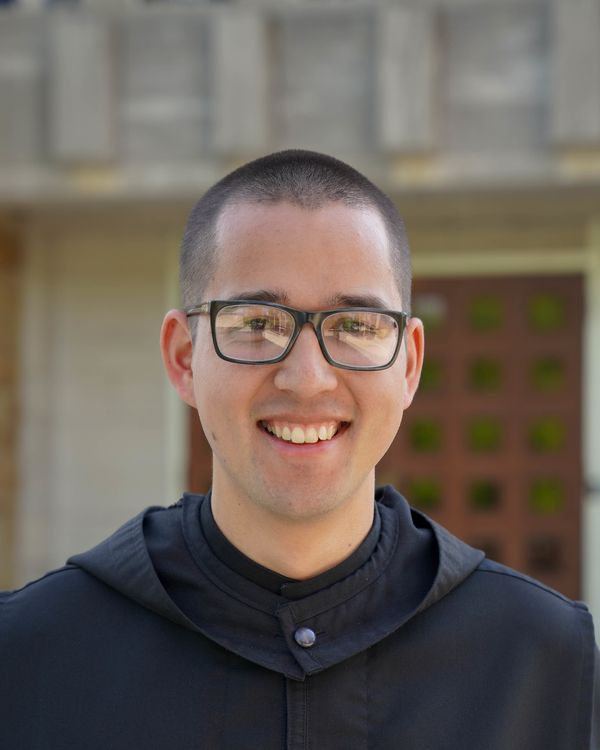
Photo: Anne Stephens Fr. Dominic Lee
Teacher · master of ceremonies
He wanted to fly airplanes until, at sixteen, the thought came: “I could be a priest and do something radical for God.” He entered in 2014 and teaches mathematics at the Prep. “Seeing as I get motion sick and don't particularly like heights, it was probably best that God didn't make me an airplane pilot!”
-
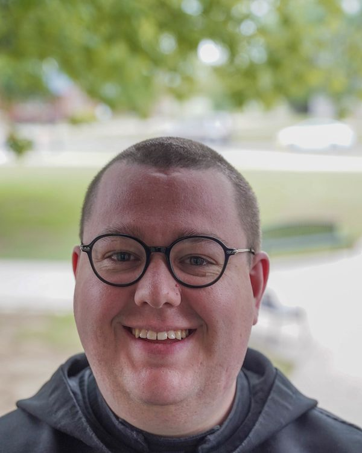
Photo: Anne Stephens Fr. Paschal Pautler
President of St. Bernard Prep
A boarder at the Prep for four years, he entered the monastery two weeks after graduation, drawn by the chant and the brothers' life together. “I couldn't think of anything better!”
-
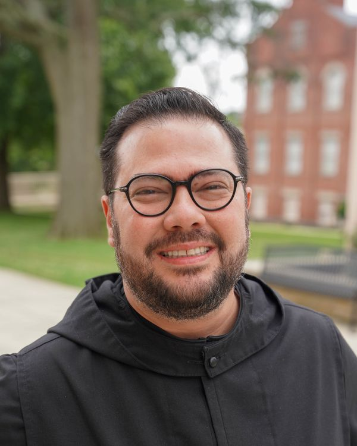
Photo: Anne Stephens Fr. Pachomius Alvarado
Associate pastor, St. Francis, Birmingham
He served his parish in Cuba in a time of persecution, then found monastic life “accidentally” while working in Colombia, where he met Fr. Joel. He came in 2014 and baked the monks' bread before his ordination in 2023.
-
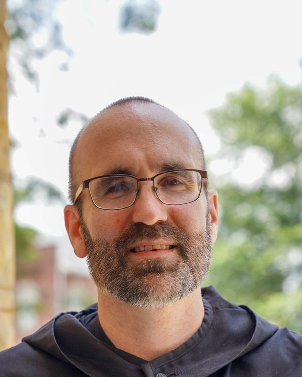
Photo: Anne Stephens Br. Augustine Munkachy
Webmaster
Five years on the submarine USS Maryland, then computer work in Washington and years abroad, until the image of Our Lady of Guadalupe brought him back to faith. He made solemn vows on 15 August 2025. “I have visited many places, but I found God here.”
Juniors
Monks in simple vows, three years of living the vows before making them for life.
-
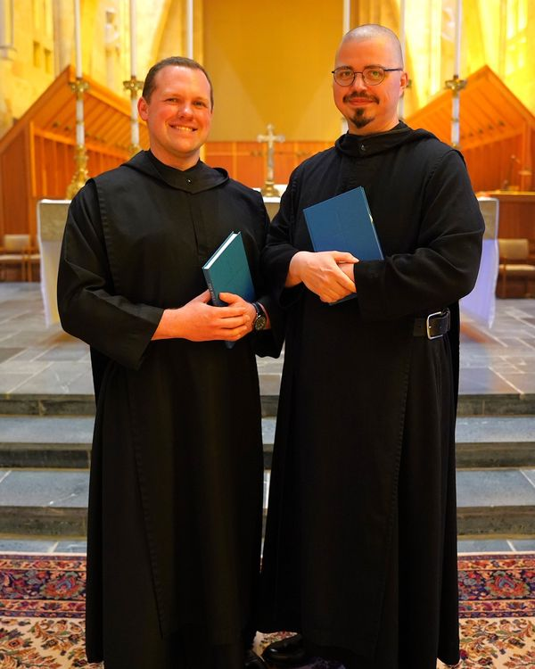
Photo: Anne Stephens Br. Damien Jackson and Br. Raphael Ray
First vows 21 March 2026
Br. Damien's patron is St. Damien of Molokai (10 May); Br. Raphael's, St. Raphael the Archangel (29 September). They made their first vows together on the feast of the passing of St. Benedict, and now begin three years in simple vows before solemn profession.
Novices
A year of prayer, work and study in the habit before first vows.
-
Photo to come Br. Nicholas Smith
Novice · artist
He took his name to follow Br. Nicholas Weiss (1907–1982), the abbey's woodcarver, and like him he draws: the map of the campus for the Bloomin' Festival is his. The abbey's original campus map was probably drawn by the first Br. Nicholas.
-
Photo to come Br. Boniface Boland
Novice
He entered the novitiate in March 2026, with Br. Nicholas.
Portraits: Anne Stephens. Words in quotation marks are the monks' own, from the abbey's website and the Cullman papers.
A day in the life
From the Grand Silence to the holy water
- 6:00 a.m.The night's Grand Silence is broken by the first words of Matins: “O Lord, open my lips.” Lauds follows as the sky grows light.
- After LaudsTwenty minutes of private prayer, most often lectio divina; then breakfast, in silence.
- MorningWork: teaching in the school, the bakery, the grounds, the Grotto, the offices. A monastery and a school take many hands.
- 11:55 a.m.Sext. Then lunch, usually the one meal with conversation.
- AfternoonMore work. Toward four, quiet prayer in the cells or the Blessed Sacrament Chapel.
- 5:00 p.m.Mass, then Vespers. Supper in silence, with reading at table, except on feasts.
- EveningHalf an hour of recreation: coffee, conversation, a walk, a board game.
- 7:15 p.m.Compline. As each monk leaves the church the abbot blesses him with holy water, and the silence begins again.
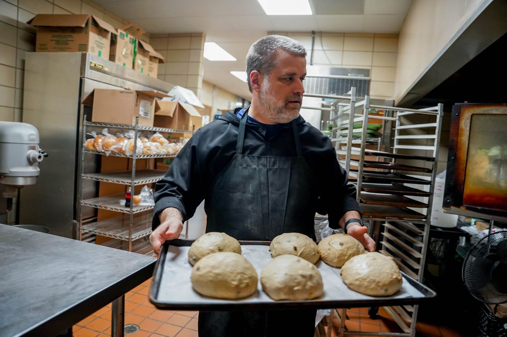
Our history
From Bavaria to Alabama
St. Bernard is a granddaughter of Metten Abbey in Bavaria, founded in the eighth century. Our first monks were mostly Bavarian craftsmen, and they built much of the abbey with their own hands.
The monks who built St. Bernard- 1846Boniface Wimmer, a monk of Metten, founds St. Vincent Abbey in Latrobe, Pennsylvania, the first Benedictine monastery in the United States.
- 1870sMonks from St. Vincent come to Alabama to serve the German settlers around Cullman. Their first mission is St. Michael's, St. Florian.
- 1891On 29 September St. Bernard becomes an abbey. In the sacristy, after a Pontifical Mass, the monks elect Fr. Benedict Menges first abbot, unanimously, on the first ballot. The bells ring the news out to Cullman, the Te Deum is sung, and that night a brass band plays for the new abbot.
- 1892The school opens: in time a high school, college and seminary.
- 1934The Ave Maria Grotto is dedicated, 17 May.
- 1963The present monastery is built.
- 1981The Retreat Center opens.
- 1984St. Bernard Preparatory School opens.
- 1995Abbot Cletus Meagher is elected ninth abbot.
- 2019Abbot Marcus Voss is elected tenth abbot.
- 2025The renovated monastery is dedicated, 27 June.
- 2026Abbot Brendan Seipel is elected eleventh abbot, 29 July.
Vocations
Is God calling you?
Over the last decade St. Bernard has seen a growth in vocations that is rare among American Benedictine monasteries. A man who thinks God may be calling him here begins by writing to the vocation director, then visits, and in time may ask to enter.
One does not become a monk overnight. The way takes several years, and at each step both the man and the community ask whether God is calling him here.
- PostulancyAbout six months living inside the monastery, in the tunic, the first part of the habit. Classes in monastic life; free to leave at any time.
- NovitiateA year of prayer, work and study. The novice receives the scapular and, usually, a new name for his new life.
- Simple vowsStability, obedience and conversion of life, promised for three years. The junior monk receives the hood (capuche) and his first job in the community.
- Solemn vowsThe same vows, for life. He receives the cuculla, the great pleated cowl worn on feasts.
Questions
What people ask about monks
What is the difference between a monk and a priest?
Every man here is a monk: he has come to seek God through prayer and work in this community. Some monks are also ordained priests, and they celebrate the sacraments for the community, the school and nearby parishes. A monk-priest belongs to his monastery, not to a parish. Priests or not, we are all brothers.
What vows do Benedictines make?
Three: stability, to live for life in this one community; obedience, to God through the Rule and the abbot; and conversion of life (conversatio morum), which takes in poverty and celibacy and the daily work of turning toward God. As St. Paul advises (1 Corinthians 7:32–35), monks do not marry, so as to give their whole lives to God.
Do monks have fun?
Yes. Every evening after supper there is recreation in the community room, with coffee, conversation and sometimes a board game. Monks walk the trails, run and bicycle; there is usually a movie night each week, and on some holidays the community spends the day at a lake.
Do monks see their families?
Yes. Monks may receive visitors fairly often, with the superior's permission, and each year they may go home or take a vacation with their loved ones.
Can I visit?
Please do. “All guests who present themselves are to be welcomed as Christ” (Rule, chapter 53). Come to Mass and the Office, see the Grotto, or stay at the Retreat Center. If you are thinking about a vocation, write to the vocation director before you come.
Oblates
Benedictines in the world
Oblates are men and women who live by the Rule of St. Benedict in their own homes and work, joined in prayer to the monks of St. Bernard. To learn more, call Br. Benedict Dyar, director of oblates, at 256-255-5845.